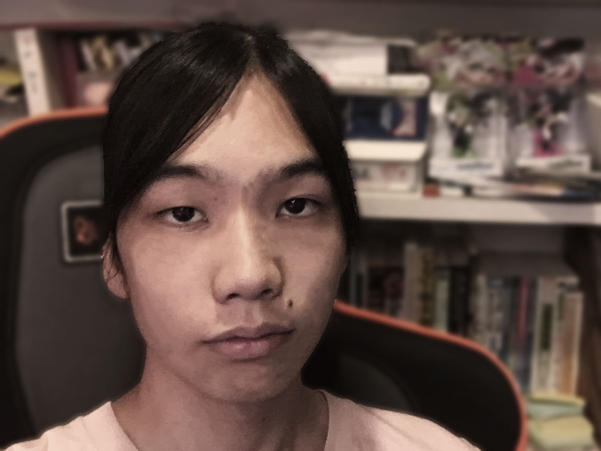
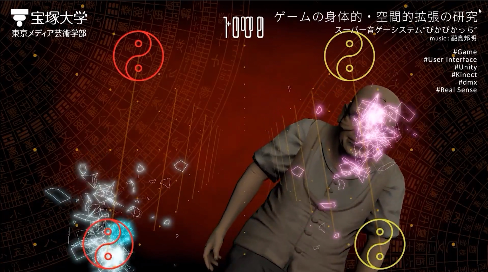
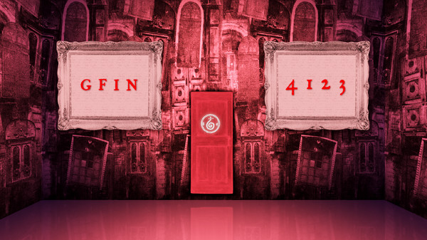

Osawa Shogo
About
大沢祥吾

- Profile
-
宝塚大学 東京メディア芸術学部 ゲーム領域 3年
1997年、東京生まれ。小学校入学から埼玉で過ごしています。
はじめまして。主にUnityでゲーム制作をしています。
大学1年から半年に一回のペースでゲームを作ってきました。
Skils
-
- Unity
-
基本的なEditorの操作ができる。
-
- C#
-
リファレンスを調べずにプログラムを書くことができる。
Unityでは、Monobehaviourを継承せずにプログラムを組むことができる。
-
- Javascript
-
このポートフォリオサイトの作成ができる程度。
jQueryを調べながら使うことができる。
-
- python
-
SNSの『Discord』でBotを作成したことがある程度。
調べながら、ライブラリを読み込んでスケジュール管理Botを作成した。
-
- Git
-
ブランチを分けたり、プルリクエストを作成することができる。
コンフリクトを解消したことはない。
-
- Illustrator
-
基本的な操作ができる。また、キャラクターをパスツールでトレースすることができる。
Works
ぴかぴかっち

- 概要
-
kinectを使った音楽ゲーム。両手をつかい、タイミングよく上下に動かすことで得点が得られる。
5人で制作し、プログラマーとしてプロジェクトに参加した。
Catch The Hotdog!

- 概要
-
大学1年の夏に文化祭でホットドッグ販売をする際に一緒に展示する目的で制作を行った作品。
ゲーム制作は、4人で行い、自分はプログラマーとしてプロジェクトに参加した。
iPadで展示し、GoogleSpreadSheetと連動したオンラインランキングシステムもつけた。
のびねこ

- 概要
-
大学2年後期に授業内で作ったiPad向けゲーム
2人で制作し、プログラマーとして参加した。
ワンアクションでできるゲームというお題で、ジャイロを使った障害物を避け、アイテムを取るゲームを制作した。
メッシュを動的に生成するプログラムを取り入れ、ネコが天まで伸びていくゲームを作った。
Steam版『マドリカ不動産』

- 概要
-
インターンシップとして、Switch向けゲーム『マドリカ不動産』のSteamへの移植に携わった。
SwitchからPCへのキーボード・マウス入力への切り替え、Steamの実績システムの作成を行った。